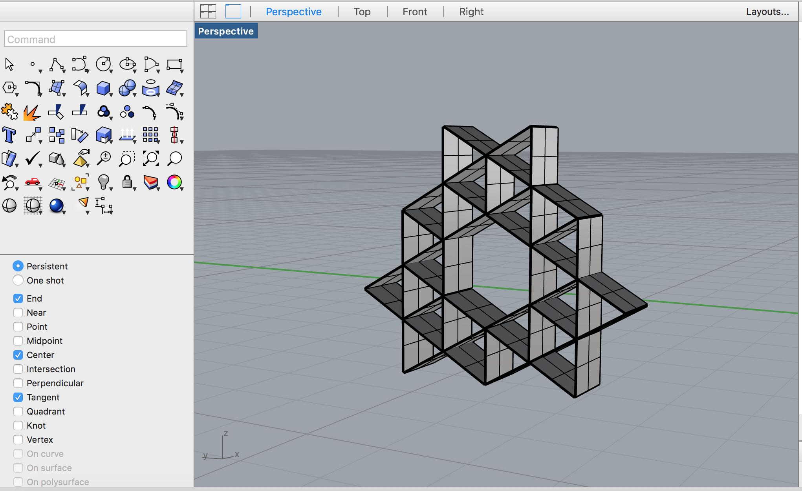
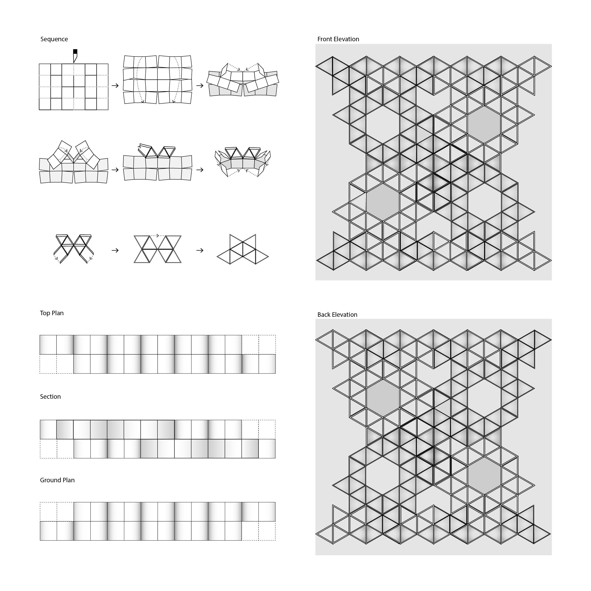
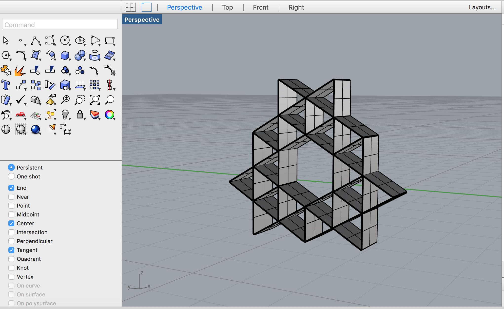
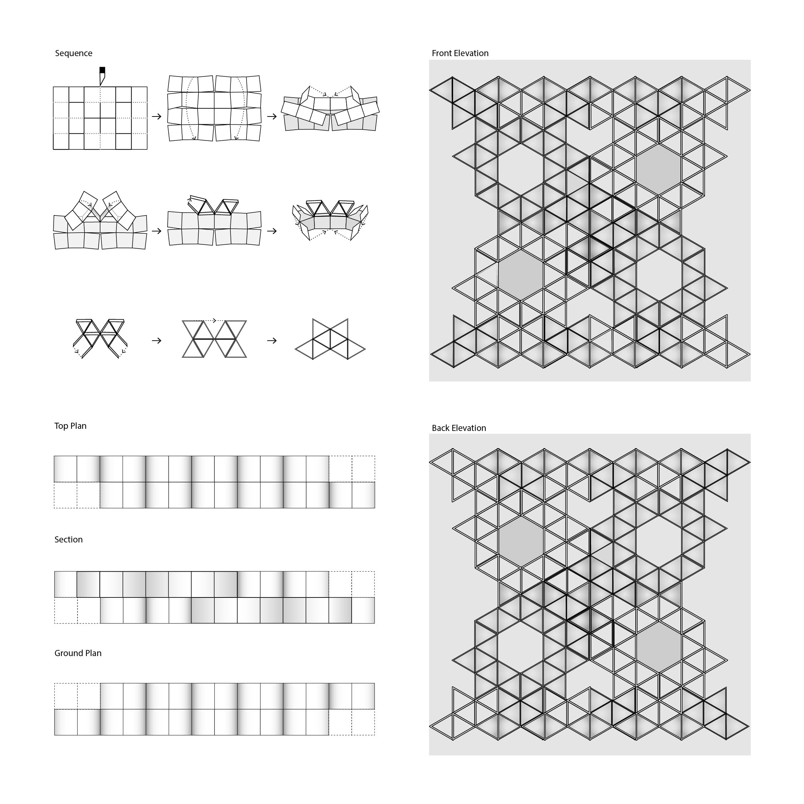

Paper Screen 2018 | Adobe Illustrator, Rhinoceros
This is one of the first 3D designs that I have done. The paper screen is made up of 64 identical units that are folded from 4”x 6” paper. I want the screen to create nice shadows and have unique shapes from different angles. I then created drawings that explain how this was made, and what it looks like from different angles. I tried to utilize many shades and line weights to create depth. For the axonometric drawing, I first created a 3D model on Rhinoceros, then transferred it onto Illustrator to add colors.